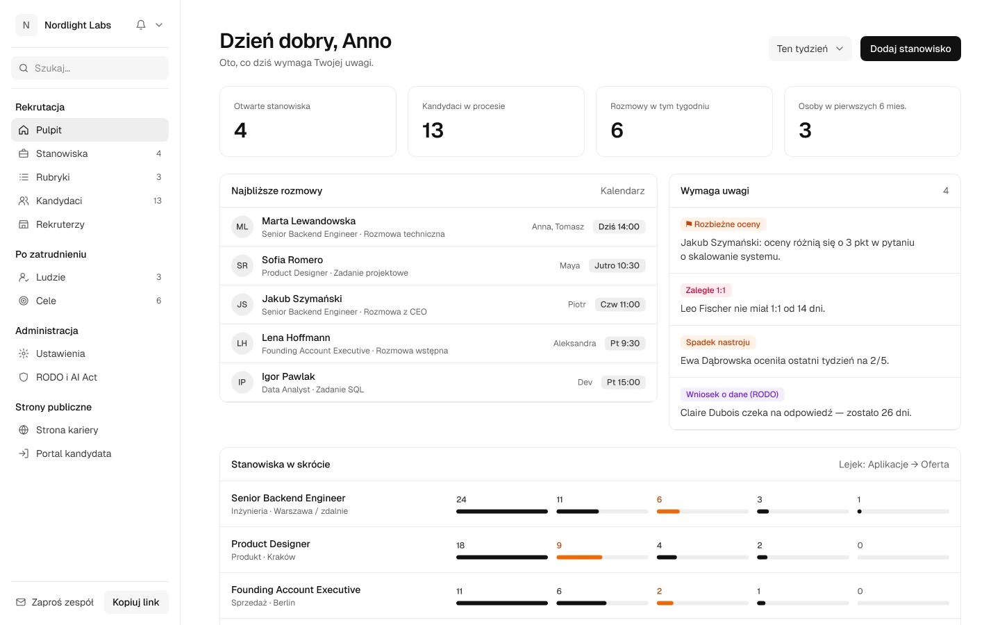

Transkrypcja+
Notetaker AI. Sam dołącza do rozmowy z kalendarza, nagrywa ją i zapisuje, kto co powiedział.
Rubryki z wagami, transkrypcja każdej rozmowy i sugestie ocen poparte cytatami. Decyzję podejmujesz Ty. Po ofercie Tekma prowadzi nową osobę przez pierwsze 90 dni.
Pierwsze stanowisko w 5 minut · dane w UE
Notetaker nagrywa rozmowę i dopasowuje odpowiedzi do rubryki. AI proponuje ocenę z cytatem, decyzja należy do rozmówcy. Gdy oceny są rozbieżne, Tekma to oznaczy.
Spróbuj: zmień ocenę przy pytaniu o współpracę.
Senior Backend Engineer · źródło: polecenie
Sugestie AI są pomocnicze i zawsze mają uzasadnienie. Decyzję podejmuje człowiek (AI Act, zał. III).
AI czyta CV, słucha rozmów, podsuwa pytania i szkicuje kolejne kroki. Wszędzie widać, co zaproponowało AI, a co zdecydował człowiek. Kliknij elementy w panelach poniżej — to działa.
Notetaker AI. Sam dołącza do rozmowy z kalendarza, nagrywa ją i zapisuje, kto co powiedział.
Rubryki z kotwicami. Każda ocena 1–5 ma opis. Koniec z „dobrze mi się rozmawiało”.
Lejek z zasadami. Kandydat idzie dalej po min. dwóch ocenach, nie po jednej miłej rozmowie.
Raport lejka. Widzisz, gdzie odpadają kandydaci i kto czeka za długo.
Plan 90 dni. Po ofercie Tekma prowadzi nową osobę przez przeglądy i check-iny.
RODO i AI Act. Dane w UE, zgody kandydatów i rejestr decyzji AI w jednym miejscu.
Prawdziwe ekrany aplikacji, z danymi przykładowymi. Jasne, spokojne, bez zbędnych ozdobników.

Wnioski z rekrutacji trafiają do profilu nowej osoby. Plan 90 dni, 1:1, check-iny i cele powiązane z celami firmy pokazują, jak idzie — zanim zrobi to przegląd roczny.
Backend Engineer · Platforma · menedżer: Dev Patel
Zacznij od szablonu albo od zera. Każde pytanie ma wagę i opis ocen 1–5.
AI wylicza dopasowanie CV, a Ty ustalasz kolejne etapy i rozmówców.
Coach AI podsuwa pytania i pokazuje, czego z rubryki jeszcze nie sprawdzono.
Karty ocen, porównanie kandydatów i flaga, gdy oceny są rozbieżne.
Przeglądy po 30, 60 i 90 dniach planują się same.
Cele, szkolenia i sygnały ostrzegawcze, zanim drobiazg urośnie w problem.
Według często cytowanych szacunków nietrafione zatrudnienie kosztuje ok. 30% pensji z pierwszego roku. Zespół dodajesz bez limitu i bez dopłat.
Na pierwsze rekrutacje
Dla zespołu, który zaczyna rosnąć
Dla zespołów, które rekrutują stale
Pierwsze stanowisko skonfigurujesz w 5 minut. Plan 90 dni będzie gotowy, zanim nowa osoba zacznie pracę.